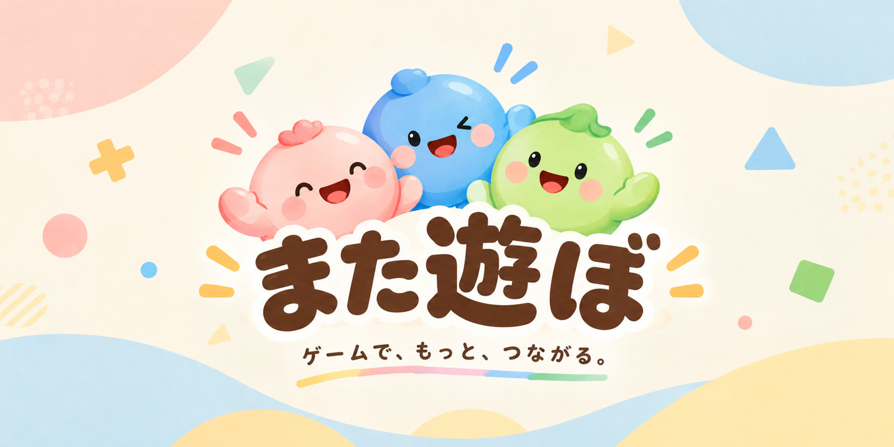

遊べるゲーム
だるまさんがころんだ
だるまが言っている間だけ進める。振り向かれたときに動いていたら、見つかって押し戻されます。だるまにも子どもにもなれて、CPU の子どもたちと遊べます。
おかしならべ
同じお菓子を4つ並べたら食べられる。相手のお菓子と入れかえると、そのお菓子は恋モードに。スタンプを送り合いながら、みんなと遊べます。
三人将棋
9×9の盤で、3人が1局を指す将棋。ともだちと部屋で指せて、空いた席にはルールだけから学習したAIが入ります。
みんなの〇択
正解のない質問に答えて、みんながどれを選んだか見られます。友達と答えくらべすると「ふたりの一致率」が出ます。
試作中
まだ作っている途中のゲームです。遊べますが、ルールや見た目はこれから変わります。
感想を X で教えてもらえるとうれしいです。
四字熟語あつめ
漢字の部品がみんなに配られます。読みと意味を手がかりに、部品を持ち寄って四字熟語を完成させよう。答えに使わない部品も混ざっています。